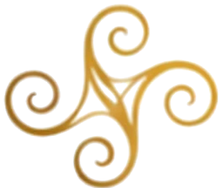
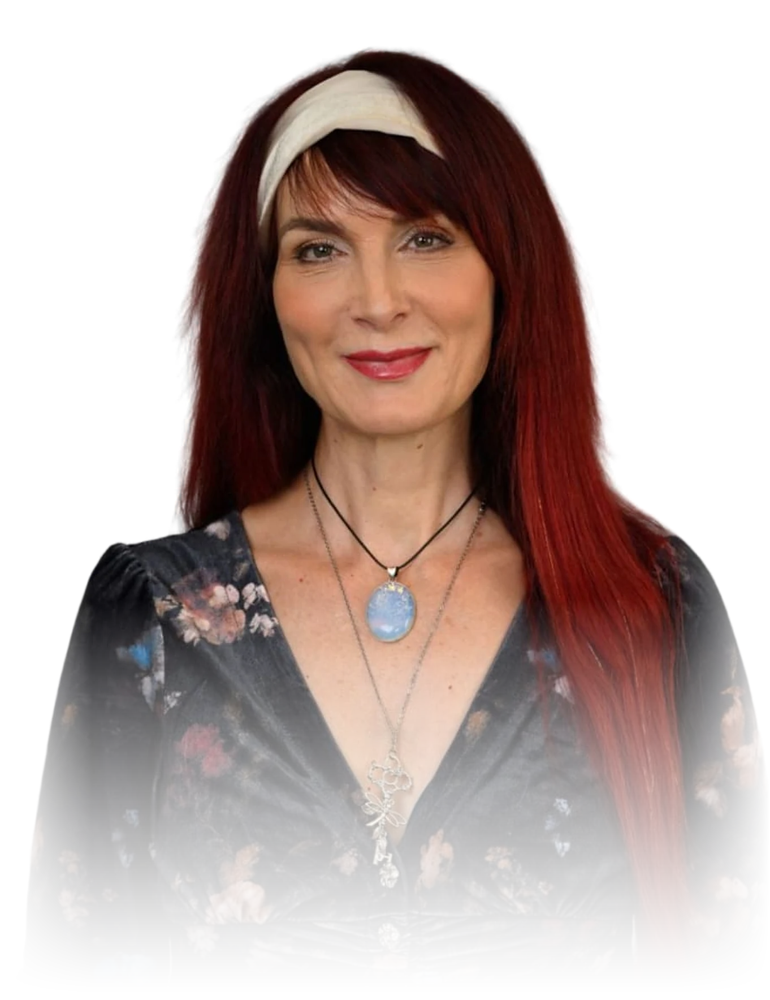
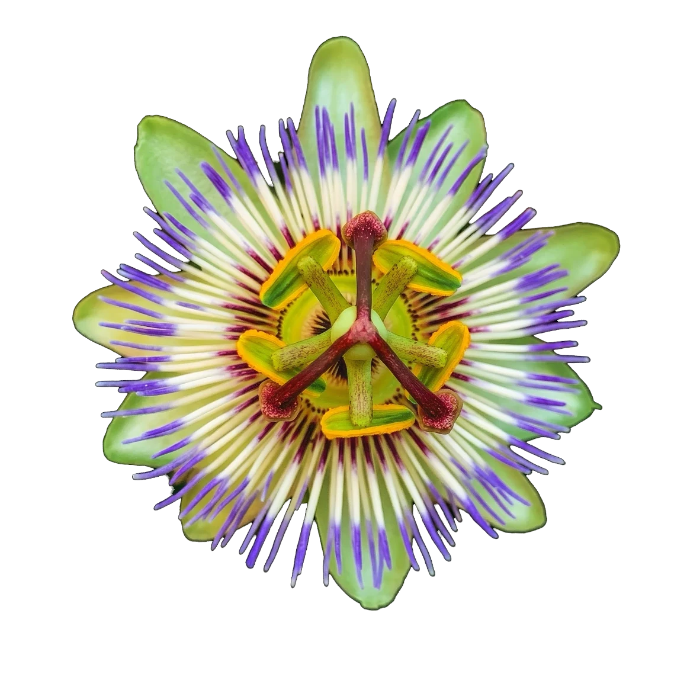
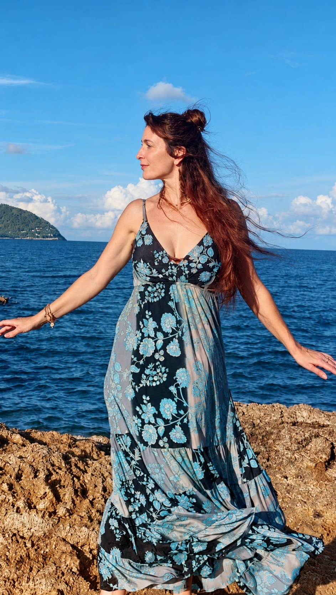

Energiearbeit · Körperwahrnehmung · Kreativer Ausdruck
Ich begleite dich auf deinem persönlichen Weg der Veränderung mit Energie und Körperarbeit.

Du hast schon vieles verstanden und darüber gesprochen – und dennoch hat sich wenig verändert?
Vielleicht spürst du, dass Worte allein nicht mehr ausreichen.
Oder dich beschäftigt eine konkrete Lebensfrage, ein kleineres Thema oder du wünschst dir einfach eine Reinigung und Klärung deines Energiefeldes.
Vielleicht wünschst du dir auch mehr innere Balance und neue Kraft, um dein Leben bewusst, selbstbestimmt und kreativ zu gestalten.
Du möchtest dich als Einheit von Körper, Geist, Emotionen und Energie erleben und Veränderung nicht nur verstehen, sondern auch erfahren.
Dann bist du hier richtig.
Was auch immer dich persönlich bewegt – dein Anliegen hat hier Raum.
Schreib mir gerne ganz unverbindlich, was dich beschäftigt.
Meine Arbeit ist in den indigenen Heiltraditionen der Anden und des Amazonas verwurzelt und fand durch Dr. Alberto Villoldo und die von ihm gegründete Four Winds Society ihren Weg in die westliche Welt.
Die alte Weisheit der indigenen Heilkunst beruht auf einem tiefen Verständnis von Energie, Natur und der Ganzheit des Menschen.
Diese Energiearbeit setzt dort an, wo Muster ihre Spuren hinterlassen: im Körper, im Gewebe, im Nervensystem und im Energiefeld.
Klären wir das Feld, kann sich auch unser Blick auf die Welt verändern – und damit die Art, wie wir unserem Leben begegnen.
Die vier Winde werden im Medizinrad durch Schlange, Jaguar, Kolibri und Adler verkörpert. Sie stehen für vier archetypische Kräfte, die als Fähigkeiten und Ressourcen in uns wirken und uns auf unserem persönlichen Weg der Veränderung begleiten.

Heilung ist eine Reise, keine Intervention.
Niemand kann diesen Weg für einen anderen Menschen gehen.
Aus der schamanischen Haltung heraus sehe ich mich als Wegbegleiterin auf deiner persönlichen Reise. Ich ermutige dich, ehrlich hinzusehen und anzunehmen, was sich zeigt.
Was bewusst wird, kann seine Macht über uns verlieren. Darin können Wandlung, innere Kraft und Selbstermächtigung entstehen.
Wie die Passionsblume sich Schicht für Schicht öffnet, geschieht Heilung in ihrem eigenen Rhythmus – von innen heraus.
Klar. Achtsam. In deinem Tempo.
Ich begleite dich dabei mit offenem Herzen, Präsenz, Feinfühligkeit, großem Respekt vor deinem individuellen Weg und tiefem Vertrauen in dein Potenzial.

Die jahrzehntelange Begleitung von Kindern und Erwachsenen hat meinen Weg geprägt. Meine Erfahrungen in Pädagogik, Heilpädagogik und Integraler Tanz- und Ausdruckstherapie sowie meine intensive Auseinandersetzung mit der Tiefenpsychologie von C. G. Jung, insbesondere der Schattenarbeit, haben mein Verständnis für den Menschen und seine individuellen Lebensthemen und Wege vertieft.
Der bedeutendste Wendepunkt meines Lebens war die Begegnung mit der schamanischen Energiemedizin in der Tradition der Anden und des Amazonas. In ihr fand ich die Essenz dessen, was mir schon immer am Herzen lag. Sie eröffnete mir einen neuen Zugang zum Menschen, zu den tieferen Ebenen des Bewusstseins und zur Kraft der Bewusstwerdung für nachhaltige Veränderung.
Alle Munay-Ki-Riten habe ich in tiefer Dankbarkeit empfangen. Sie sind Teil meines persönlichen Weges und meiner Arbeit im Dienst an den Menschen.
Heute bündelt sich all das in meiner Arbeit. Ich verbinde schamanische Energiemedizin mit bewusster Körperwahrnehmung und kreativem Ausdruck. So entsteht ein Raum, in dem innere Wandlung nicht nur verstanden, sondern auch auf allen Ebenen gespürt und erlebt werden kann.
Körperwahrnehmung, authentische Bewegung, intuitives Malen, Musik und Klang unterstützen und vertiefen deinen persönlichen Prozess und verankern das Erlebte.
Zusätzlich inklusive: 2 × 30 Minuten Integrationszeit – zum gemeinsamen Nachspüren, Integrieren und Verankern im Alltag.
Auch danach bin ich für dich da. Für kurze Fragen, zum Nachspüren und für Impulse zur Integration und nachhaltigen Verankerung im Alltag kannst du dich auch über WhatsApp bei mir melden – ohne zusätzliche Kosten.
Sozialtarif · Wenn du dir eine Begleitung wünschst, der reguläre Preis für dich derzeit jedoch nicht möglich ist, sprich mich gerne an. In begrenztem Umfang biete ich Termine zu einem reduzierten Sozialtarif an.
Alle Preise inklusive gesetzlicher Mehrwertsteuer.
Bereit für deinen nächsten Schritt?
30 Minuten kostenloses Erstgespräch
Schreib mir gerne ganz unverbindlich. Ich freue mich auf deine Nachricht.
KontaktKatharina WiesensarterWhatsApp / Telefon: +49 1573 4359358
E-Mail: energie.medizin@web.de
Webseite: www.wegdervierwinde.de
Vor Ort: München-Pasing · Termine nach Vereinbarung